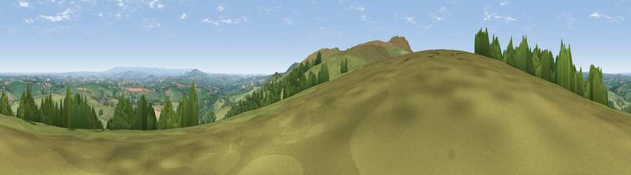

Viewpoint near North Hill
#8896 in England · top 16% of its area beats it · near North Hill · open accessWhere it is
The exact computed spot (SX 26400 75825). Click the marker for map links.
Public access: this spot lies on mapped open-access land (CRoW Act 2000) — you may roam here on foot. Computed from Natural England's CRoW access layer and OpenStreetMap rights of way — not the legal definitive map. Always verify locally.
The view, rendered

A 360° render of this exact spot computed from the terrain model, tree cover and land cover — summer colours, afternoon light, calibrated against photographs of famous viewpoints. Real trees, hedges and buildings will differ in detail.
The panorama
Grey silhouette: terrain skyline in each direction (720 bearings, Earth curvature and refraction included). Dashed green: skyline with trees (+15 m) and buildings (+8 m) as obstacles. Blue strip: how far the ground is visible on each bearing.
Where the view opens
Wedge length = distance to the farthest visible ground on that bearing (vegetation-aware). Rings at 10, 25 and 50 km.
What fills the view
72% grassland · 20% woodland · 6% cropland · 1% built-up
Angular shares of the visible panorama (visual magnitude), not map area. Landscape diversity 0.34 (0–1 Shannon).
Key numbers
More beautiful places nearby
The staircase of upgrades: each row has a higher view potential than everything closer. Driving times are estimates from straight-line distance, calibrated against real road routing — check an actual route before setting out.
| Place | Direction | Drive | Score |
|---|---|---|---|
| Hawk's Tor | NW · 1 km | ~3 min | 67.0 |
| Viewpoint near Henwood | SW · 1 km | ~4 min | 76.2 |
| Viewpoint near Henwood | S · 3 km | ~8 min | 77.3 |
| Caradon Hill | SSE · 5 km | ~11 min | 78.5 |
| Kit Hill | ESE · 12 km | ~22 min | 80.3 |
| Viewpoint near Lesnewth | NW · 21 km | ~35 min | 82.6 |
| Viewpoint near Boscastle | NW · 22 km | ~37 min | 85.2 |
| Viewpoint near Lesnewth | NW · 22 km | ~37 min | 87.7 |
50.55634, -4.45214 · source: screening · position refined by local search. Computed location — check access rights before visiting.